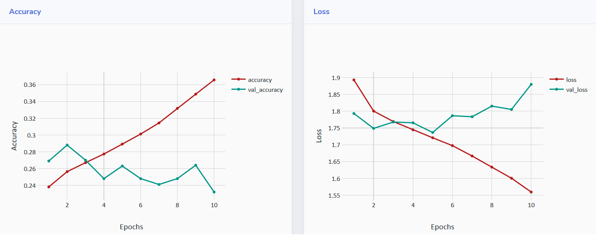
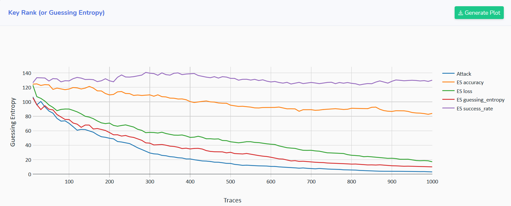
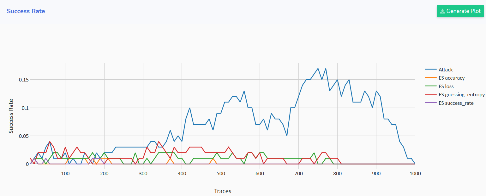

Custom Early Stopping Metrics
AISY Framework allows easy definition of custom metrics to be monitored during training. This is specially important when early stopping is considered in the profiled SCA.
Custom metrics are processed in a standard callback, EarlyStoppingCallback. Therefore, an early_stopping dictionary is passed
to the run method:
early_stopping = {
"metrics": {
"accuracy": {
"direction": "max",
"class": "accuracy",
"parameters": []
},
"loss": {
"direction": "min",
"class": "loss",
"parameters": []
},
"guessing_entropy": {
"direction": "min",
"class": "guessing_entropy",
"parameters": []
},
"success_rate": {
"direction": "max",
"class": "success_rate",
"parameters": []
}
}
}
In the example above, we have four custom metrics. Of course, these four metrics are already implemented as standard metrics in the AISY
Framework. However, these standard metrics will only be used in the early stopping mechanism if included in the early_stopping
dictionary.
Note that for each metric we have three attributes: direction, class and parameters. The direction indicates what is
the reference (min or max) to be detected as best achieved value. The class indicates the name of the python file containing the code for the metric
and must be placed in custom/custom_metrics/ directory.
Step 1: Creating custom metric .py file
Create a new .py file named with the attribute class as defined in early_stopping. Following the early_stopping dictionary
from the above example, we create four python files inside custom/custom_metrics/ directory:
accuracy.pyloss.pyguessing_entropy.pysuccess_rate.py
Standard custom metric file structure (standard parameters)
Inside each of this files, create the following basic method run:
def run(dataset, settings, model, *args):
pass
where parameters are explained below
dataset:dataset object.settings:dictionary containing analysis configuratioins.model:training (Keras) model object.args:additional dictionary with custom arguments.
The dataset object contains the following arrays:
dataset.x_profilingarray with profiling tracesdataset.x_attackarray with attack tracesdataset.x_validationarray with validation tracesdataset.y_profilingarray with profiling categorical labelsdataset.y_attackarray with attack categorical labelsdataset.y_validationarray with validation categorical labelsdataset.plaintext_profilingarray with profiling plaintextdataset.plaintext_attackarray with attack plaintextdataset.plaintext_validationarray with validation plaintextdataset.ciphertext_profilingarray with profiling ciphertextdataset.ciphertext_attackarray with attack ciphertextdataset.ciphertext_validationarray with validation ciphertextdataset.key_profilingarray with profiling keydataset.key_attackarray with attack keydataset.key_validationarray with validation key
The settings: dictionary has the following structure:
settings = {
"key_rank_attack_traces": 1000,
"key_rank_report_interval": 1,
"key_rank_executions": 100,
"leakage_model": {
"leakage_model": "HW",
"bit": 0,
"byte": 0,
"round": 1,
"round_first": 1, # for Hamming Distance
"round_second": 1, # for Hamming Distance
"cipher": "AES128",
"target_state": "Sbox",
"target_state_first": "Sbox", # for Hamming Distance
"target_state_second": "Sbox", # for Hamming Distance
"direction": "Encryption",
"attack_direction": "input"
},
"datasets_root_folder": "",
"database_root_folder": "",
"resources_root_folder": "",
"database_name": "",
"filename": "",
"first_sample": 0,
"number_of_samples": 700,
"number_of_profiling_traces": 50000,
"number_of_attack_traces": 10000,
"key": "00112233445566778899AABBCCDDEEFF",
"good_key": 22,
"batch_size": 400,
"epochs": 100,
"classes": 256,
"models": {
"0": {
"model_name": "my_model",
"method_name": "mlp_best",
"seed": 123456,
"model": None,
"index": 0
}
},
...
}
The settings: dictionary also contain information related to hyperparameters search.
Examples of custom metric files
For accuracy.py metric, the code can be defined as in the example below:
def run(dataset, settings, model, *args):
loss, acc = model.evaluate(dataset.x_validation, dataset.y_validation, verbose=0)
return acc
For loss.py metric, the code can be defined as in the example below:
def run(dataset, settings, model, *args):
loss, _ = model.evaluate(dataset.x_validation, dataset.y_validation, verbose=0)
return loss
Below, we provide a full example for guessing_entropy.py where guessing entropy is calculated for the validation trace set having one
byte of S-Box output of first AES encryption round as target state. The run method returns the guessing entropy after processing
key_rank_attack_traces validation traces.
from aisy_sca.crypto.sca_aes_create_intermediates import *
def run(dataset, settings, model, *args):
nt = len(dataset.x_validation)
# ---------------------------------------------------------------------------------------------------------#
# compute labels for key hypothesis
# ---------------------------------------------------------------------------------------------------------#
labels_key_hypothesis = np.zeros((256, nt))
for key_byte_hypothesis in range(0, 256):
key_h = bytearray.fromhex(settings["key"])
key_h[settings["leakage_model"]["byte"]] = key_byte_hypothesis
labels_key_hypothesis[key_byte_hypothesis][:] = aes_intermediates(dataset.plaintext_validation, dataset.ciphertext_validation,
key_h, settings["leakage_model"])
good_key = [int(x) for x in bytearray.fromhex(settings["key"])][settings["leakage_model"]["byte"]]
# ---------------------------------------------------------------------------------------------------------#
# predict output probabilities for shuffled test or validation set
# ---------------------------------------------------------------------------------------------------------#
output_probabilities = model.predict(dataset.x_validation)
probabilities_kg_all_traces = np.zeros((nt, 256))
for index in range(nt):
probabilities_kg_all_traces[index] = output_probabilities[index][
np.asarray([int(leakage[index]) for leakage in labels_key_hypothesis[:]]) # array with 256 leakage values (1 per key guess)
]
key_ranking_sum = 0
for key_rank_execution in range(settings["key_rank_executions"]):
r = np.random.choice(range(nt), settings["key_rank_attack_traces"], replace=False)
probabilities_kg_all_traces_shuffled = probabilities_kg_all_traces[r]
key_probabilities = np.sum(probabilities_kg_all_traces_shuffled[:settings["key_rank_attack_traces"]], axis=0)
key_probabilities_sorted = np.argsort(key_probabilities)[::-1]
key_ranking_sum += list(key_probabilities_sorted).index(good_key) + 1
guessing_entropy = key_ranking_sum / settings["key_rank_executions"]
print(f"GE = {guessing_entropy}")
return guessing_entropy
Step 2: Calling early stopping custom metrics from script
The code below provides an example of how to call early stopping custom metrics from the main script:
import aisy_sca
from app import *
from custom.custom_models.neural_networks import *
aisy = aisy_sca.Aisy()
aisy.set_resources_root_folder(resources_root_folder)
aisy.set_database_root_folder(databases_root_folder)
aisy.set_datasets_root_folder(datasets_root_folder)
aisy.set_database_name("database_ascad.sqlite")
aisy.set_dataset(datasets_dict["ascad-variable.h5"])
aisy.set_aes_leakage_model(leakage_model="HW", byte=2)
aisy.set_batch_size(400)
aisy.set_epochs(10)
aisy.set_neural_network(mlp)
early_stopping = {
"metrics": {
"accuracy": {
"direction": "max",
"class": "custom.custom_metrics.accuracy",
"parameters": []
},
"loss": {
"direction": "min",
"class": "custom.custom_metrics.loss",
"parameters": []
},
"number_of_traces": {
"direction": "min",
"class": "custom.custom_metrics.number_of_traces",
"parameters": []
},
"success_rate": {
"direction": "max",
"class": "custom.custom_metrics.success_rate",
"parameters": []
}
}
}
aisy.run(
early_stopping=early_stopping,
key_rank_attack_traces=500
)
metrics_validation = aisy.get_metrics_validation()
for metric in metrics_validation:
print("{}: {}".format(metric['metric'], metric['values']))
Returning a tuple (or list of values) in the custom metric
In the metric examples above (accuracy.py, loss.py and guessing_entropy.py), each metric returns a single (float) value. It
also possible to return a tuple or a list of values instead of a single value.
Retrieving the early stopping metric values
As in the example above, the method
metrics_validation = aisy.get_metrics_validation()
returns the list of defined early stopping metrics and their values for each epoch. Running the above code, the user should get a results similar to the following one:
val_accuracy: [0.269, 0.288, 0.27, 0.248, 0.263, 0.248, 0.241, 0.248, 0.264, 0.232]
val_loss: [1.7930998115539551, 1.7487744626998902, 1.7676906442642213, 1.7654361686706543, 1.7366435260772706, 1.7864224281311034, 1.7834029178619384, 1.8150662136077882, 1.8051397848129271, 1.8797064323425292]
val_guessing_entropy: [203.0, 182.0, 94.0, 86.0, 104.0, 72.0, 82.0, 125.0, 141.0, 129.0]
val_success_rate: [0.0, 0.0, 0.0, 0.0, 0.0, 0.0, 0.0, 0.0, 0.0, 0.0]
Visualizing metric results in the Web Application
It is also important to note that custom metric retuls are also stored in the defined SQLite database file.
Plots can also be observed in the web application interface that runs on localhost.
The plots can be seen as in the example below:


For each early stopping metric, the framework computes the guessing entropy:

In the above plot, the Attack label (in blue) denotes the guessing entropy of a single key byte computed after all processed epochs (end of training).
The other lines refer to the guessing entropy at the epoch where the correspondent metric achieves the best value.
The same type of result is provided for success rates:
